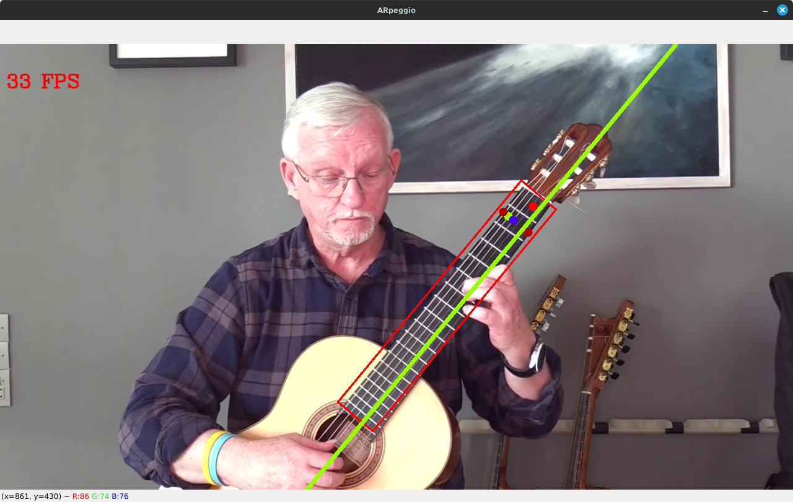
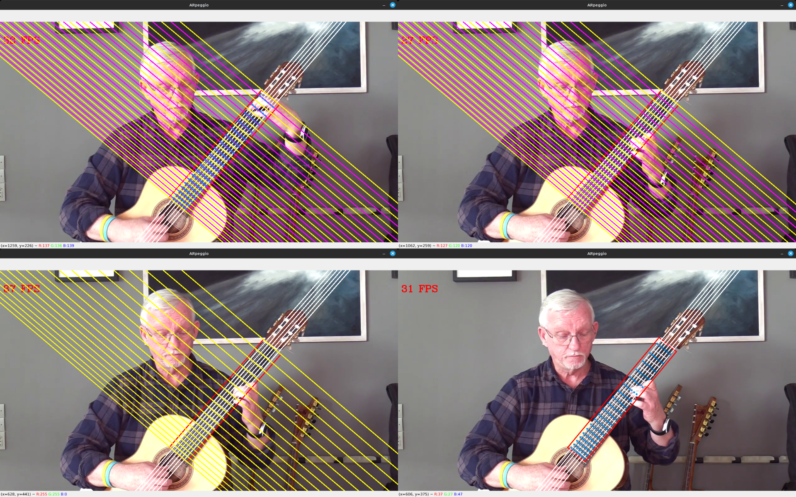

Hey there! I'm a high-school student from Turkey who has been dabbling in programming for about four years now. During this time, I've been busy creating games and programs that I'm not very proud of! Seriously my early works could've been the definition of bad code and failure... Recently, I've decided to share my progress and current projects on this website. So, feel free to take a look and join me on this exciting journey!
About Me
Projects
ARpeggio
Do you find reading sheet music or tablatures a bit daunting? Well, you're not alone. I'll be honest, I'm not the most consistent player, and I often go through extended periods without practice. It can be frustrating to pick up where I left off with reading sheet music or tablatures every time I start playing again. That's why I developed this program: to tackle this annoyance head-on.
Introducing ARpeggio, a Python-based program that I'm considering rewriting in C/C++ before publishing. With the help of AI, it's designed to teach you how to play the guitar.
ARpeggio is all about making guitar learning more accessible and enjoyable. No need to worry about deciphering complicated notations. This program aims to guide you through your guitar journey without relying on traditional sheet music or tablatures. It's like having your very own personal guitar instructor right at your fingertips.
I'm proud of the progress I've made with ARpeggio, and I can't wait to bring it to you. Stay tuned for updates on its development and release on my website.
How ARpeggio can benefit you
So far, 2 modes have been developed for the program, they're both showcased above in video format: One extracts the hand movements and landmarks from a video of your submission and then illustrates them on your guitar (legacy) and the other reads a guitar tablature of your submission and then highlights/marks the frets you should press and the strings you should pull.
Contributing
- I have encountered some difficulties in creating an executable. Initially, I attempted to build it as a Docker image, but I abandoned that approach due to the complexity of sharing X-Server access, which regular users might find daunting. Furthermore, options like Pyinstaller are not suitable for generating a Windows build since I primarily use Linux.
- My code could benefit from further cleaning and refinement.
- I am eagerly seeking a modern graphical user interface (GUI) to enhance the user experience.
- While a C/C++ integration may not be immediately necessary at this early stage, the Python version of the program performs poorly on my machine, achieving a meager 10-12 frames per second (FPS). Introducing a C/C++ integration could potentially resolve this issue.
- Your altruism is truly commendable! I've had a strong desire to produce an Android and web version of the program for a long time now, but my experience with Java is extremely limited, and I possess no knowledge of JavaScript. As a result, you would need to take the lead in this endeavor.
If you're a developer who knows Python
If you're a developer who knows C/C++ and fulfill the requirements outlined in the YOLOv8-TensorRT-CPPrepository
If you're a developer who wishes to port this program to another language such as Java or JavaScript
Updates
ARpeggio
3/5/2024
Hi, I've added color-coding to musical notes. So far, you can't change which color is assigned to what note, but I plan to make it customizable.
The image I used for demonstration purposes belongs to Per-Olov Kindgren.

29/4/2024
Hi, I've managed to solve quite a bit of problems concerning the fluctuations which were happening when segmenting the fretboard. Turns out running object detection models before the segmentation model in order to reduce the area of interest was not contributing to the program being more efficient, contrary to my belief.
Anyway, I've also added a demo video on ARpeggio's main project page recorded with live video footage of myself, which should represent how a real user would utilize the program.
22/4/2024
Hi, There's been no major updates since the last one. I just wanted to announce that I'll be discontinuing support for ARpeggio's hand landmark mode. I don't think it's really useful at all, and wasn't even my intention with the program to begin with. The further versions of ARpeggio will only feature the TAB decipher mode. Concerning the code repository, I will probably make two branches, one being legacy and the other being master.
Apart from that, I'll also be publishing a video on my YouTube channel in which I explain the mathematical properties of ARpeggio sometime in the future.
11/4/2024
A couple of days earlier, I successfully managed to illustrate the deciphered tablature data on the fretboard. As the video footage I used whilst testing my program belongs to Per-Olov Kindgren I contacted him regarding the use of his footage for my program's showcasing purposes, and he kindly allowed me to use his footage. I've included said video below:
6/4/2024
Again, I was only able to continue the development of the project after a month because of school and other academic affairs. However, I've managed to make progress despite all of these constraints. The project is not even close to its final phases, but I hope to be able to complete it sometime in the future. Anyway, here's what I have been working on in the last couple of days.
Converting ASCII Tablature to a Format which ARpeggio Can Read
e|--1--1--1-----|--2--------2--|--------2-----|--------------|--------------|
B|--------2-----|-----2--1-----|--------------|--------------|--------------|
G|--------------|--------3--1--|--------1-----|--------1-----|--3-----------|
D|-----3--------|--------------|-----3--3-----|--------------|--------------|
A|--3-----------|--4-----------|--------1-----|--------4-----|-----3-----4--|
E|-----4-----4--|--4-----------|-----4--4-----|-----------2--|--------------|
e|-----2--2--1--|-----------1--|-----1-----2--|--------4-----|--4-----------|
B|--------------|-----4--2-----|-----1--2-----|--------------|-----1--1--2--|
G|--1--------3--|-----------3--|-----------3--|--------1--1--|--------1-----|
D|--------4-----|-----1--1-----|--3--------4--|--4-----3-----|--------4-----|
A|--------------|--------1-----|--4-----------|--3-----------|--------------|
E|--------------|-----4--------|--2-----------|-----1--------|--------------|
e|--1--4--------|-----------1--|--2-----------|--------4-----|--1--2-----4--|
B|--------------|--------------|--------------|-----------2--|--4-----------|
G|--3--1--------|-----------3--|--------3-----|--1-----1-----|-----------1--|
D|--------------|-----1--------|--------------|--1--3--------|--4--1-----4--|
A|-----1--------|--3-----------|--3-----------|--1--3--3-----|--1-----------|
E|-----2--4-----|-----------1--|--2-----------|--2--1--------|-----------4--|
e|-----------1--|
B|-----------1--|
G|--------------|
D|--------------|
A|--3-----------|
E|-----4--------|
|
|
|
|
|
\|/
[[1, 79], [60, 1, 99], [21, 1], [99], [2, 80, 99], [21], [20, 41], [2, 39], [60, 99], [2, 60, 39, 77, 99], [80, 39], [97], [41], [79], [80]]
[[39], [2], [2, 61], [41, 1], [23, 58, 99], [58, 77, 21], [41, 1], [60, 80, 97], [1, 20], [21], [61, 41, 2], [79, 61], [96], [39, 4, 60], [39], [4], [20], [39, 20, 61], [21]]
[[1, 41], [4, 39, 77, 97], [99], [79], [58], [41, 1, 96], [2, 79, 97], [41], [39, 77, 58, 97], [60, 79, 96], [79, 4, 39], [21], [61, 77, 1, 23], [2, 58], [39, 61, 4, 99]]
As it is clearly understood from the illustration given above, I have written a deciphering program that converts ASCII tablatures to point indexes showcased in the previous update.
1/3/2024
Although I was preoccupied with school, I managed to make some progress on ARpeggio. Admittedly, it did take me quite some time, as the moments I could dedicate to it were scarce and fleeting, akin to breadcrumbs. This made it challenging to maintain a consistent focus on the project. Without further ado, allow me to present my vision for ARpeggio, along with the progress I have made thus far and the features I intend to incorporate into the program.
My Vision
In its current state, ARpeggio only allows users to practice pieces that can be analyzed from a video. However, I aim to enhance the program's capabilities by enabling it to convert guitar tablatures into training data. To achieve this, there are two crucial aspects that need to be addressed. Firstly, the program must possess knowledge of every note on the guitar and their corresponding fret positions. Secondly, it must be equipped with the ability to interpret tablatures and generate the necessary training data. I have made progress in the first aspect by ensuring that the program is aware of all the possible fret positions associated with different notes. However, I have yet to establish the linkage between these positions and their corresponding musical notes.
Mapping The Strings and Frets
Although it is not yet fully complete, I have successfully mapped the strings and frets of the guitar using the principles of analytical geometry (a heartfelt thank you to Descartes). This mapping allows us to determine the approximate locations where specific notes should be played. However, I have yet to implement a one-to-one correspondence between these approximate positions and the corresponding musical notes. The vidoes on which I conducted the tests of my program belong to Per-Olov Kindgren.
